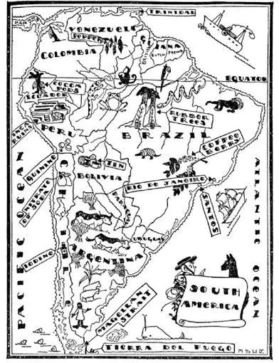
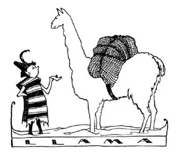

21
North South America
南美洲北部

SOUTH AMERICA looks like a carrot, a turnip, a top, a funnel, a leaf, a fig, a pear turned upside down, a paddle, a lamb chop, a leg of mutton, an ice-cream cone—but the only thing it really looks like is: South America. The stem is Panama; the hook at the bottom is called Cape Horn.
From the tip top to the tip toe of South America, from Panama to Cape Horn, stretches a long wall of high mountains called the Andes. It is the highest range of mountains in the Western Half Ball, and it is the longest range of mountains i. t. w. W.
Columbus, who discovered America, had only one country named after him. This country is in South America nearest Panama, nearest the stem by which South America seems to hang to Central America. It is called Colombia, spelled with two o’s instead of an “o” and a “u.”
When white men first came to the northern shore of South America they found a land next to Colombia where the Indians lived in houses built on stakes in the water. This reminded them of a city in Italy across the ocean, called Venice, where the houses are built in the water, so they named this new country Little Venice, which in the Spanish language is Venezuela. Off the shore of Venezuela is a peculiar island called Trinidad. On this island is a lake—but the lake has no water in it. Instead of water there is a kind of tar called asphalt. This asphalt is dug up and loaded on to ships and brought to the United States to make roadways.
The three little countries next door to Venezuela are called the three Guianas. They belong to three different countries in Europe. In fact, they are the only countries in South America that do belong to countries outside of South America. The first Guiana belongs to England, the second belongs to Holland, the third belongs to France.
In British Guiana far back in the wilds is a waterfall nearly five times as high as Niagara, yet so far away from everything that hardly any white men have ever seen it or even heard of it. It’s name is Kaieteur. Just for fun ask your father if he knows what Kaieteur is.
The line around the middle of the World, if there were a line—which there isn’t—is like the belt around a very fat man. It is called the Equator. The Spanish for Equator is Ecuador. Ecuador is also the name of a little country in South America that straddles the Equator. We should expect it to be very hot there, for the nearer the Equator one goes the hotter it usually gets; but most of Ecuador is high up in the Andes Mountains, so high up that it is quite cool all the year round. The capital of Ecuador is Quito, pronounced Key-toe. From Quito you can see two of the highest volcanoes in the World. They have names that sound strange to us; both begin with “C.” Chimborazo is the name of the higher, but it no longer smokes or sends forth fire. The other is Cotopaxi, not quite so high but still very much alive, for fires inside have not gone out.

It seems strange that from this far country in the mountains, from Ecuador, something comes which you eat or drink, perhaps every day—chocolate and cocoa. They are both made from beans which grow in a large pod-a pod as big as a melon. These pods grow, not on branches, but right on the trunk of the tree. This tree is called the ca-ca-o tree. Notice how cocoa and cacao are spelled: See-o see-o-a comes from the see-a see-a-o-tree. Cocoa does not come from the cocoanut-tree. The cocoanut-tree is an entirely different tree that bears cocoanuts but not cocoa.
The Indians of Ecuador are very wild and savage. They are called head-hunters. One family or tribe will fight another tribe whenever they want something they haven’t got—wives, perhaps—or simply because they want to fight. When they kill a man they cut off his head and save it for a souvenir, as the American Indians used to cut off a man’s scalp and save it as a souvenir or trophy. The Indian who has the greatest number of heads is considered the greatest fighter. They often fight, not with bows and arrows, but with huge blow-pipes—as long as a man—using clay balls or little darts which have been dipped in poison. With these blow-pipes they can kill men and animals. These savage Indians catch fish for food, not with a line or net, but by putting poison in the streams where the fish are. The poison kills the fish and they float on the top, but it doesn’t spoil them for eating.
The Indians of Ecuador are the most savage Indians now known, but in the country just south of Ecuador, in the country called Peru, once lived the most civilized Indians ever known. They lived not in tents or wigwams or huts, but in palaces, and they were very intelligent and very rich. They were called Incas and their capital was named Cuzco. The Incas had great treasures of gold and silver, and when the Spaniards first came to South America looking for gold or silver they found it in Cuzco already mined. All they had to do was to take it away from the Incas. This was easy because the Spaniards had guns, and the Incas, who had no such thing, were no match for them in a fight. So the Spaniards won and simply helped themselves to the gold, and made the Incas work in the mines for more. However, the joke was on the Spaniards, for many of their ships sailing back to Spain with their stolen treasure were captured by the pirates.
Many of the Spaniards who stayed in Peru married Indian women, so now most of the people in Peru are a mixture of Spanish and Indian.
There is little left of Cuzco, except ruins of the old Inca palaces. The present capital of Peru is Lima, but Lima beans don’t come from there. A medicine that is often given for fever does come from Peru, however. The Indians found that the bark of a certain tree when stewed in water made a kind of tea that was good for fever. When the white man came, he found it was good for fever too. So now the bark of this tree is gathered and sent to other countries to be used in making medicine to cure fevers. The medicine is called quinine.
In the United States loads are usually carried on freight trains or trucks but in the Andes Mountains they are usually carried on the backs of a little animal called a llama. A llama is something like a small camel without a hump.

The little llama carries big loads in the Andes
小小的美洲驼在安第斯山驮着重重的货物
Have you ever heard of a man named Simon Bolivar? Probably not, but in South America every boy and girl knows him as you know George Washington. In fact, he is often called the George Washington of South America. Just as England once owned the thirteen colonies, Spain once owned a great part of South America. Then this man Bolivar, Simon Bolivar, who lived in Venezuela, thought, as a great many others did, that Spain was not treating his country right. Bolivar had been in the United States and had heard how the United States once belonged to England and how George Washington had led the revolution against England until the United States belonged to itself. So Bolivar went back to South America and started a revolution to make his country and other countries of South America independent of Spain. He had a very hard time of it, indeed. Again and again he had to flee for his life, but again and again he returned to South America and at last succeeded in making five countries of South America independent of Spain. After he died one of these countries that he had freed changed its name from High Peru to Bolivia, after him. Bolivia is one of the few countries in the World that do not touch the sea, from which there is no way to get to the sea by boat.
Much of the tin in the World comes from mines in Bolivia. Tin pans and tin cans are not made of pure tin—it would cost too much if they were. They are made of iron and simply plated with tin. Pans and cans made of iron would rust and so be unfit for food, but tin doesn’t rust and that’s why the pans and cans are covered with a thin coating of tin. When this thin tin wears off, the iron rusts easily enough, and that’s why most tin cans you see on the ash pile are rusty; the tin has worn off.
Between Bolivia and Peru there is a very large lake. Its name sounds funny, like a person stuttering. It is Ti ti ca ca. It is the highest lake of its size i. t. w. W. I once built a rowboat in my cellar. When I had finished it I found it was so big I couldn’t get it out of the house. So I had to take it apart, carry it outside, and put it together again. There are steamers on Lake Titicaca, but in order to get them there from where they were built they had to be taken to pieces and carried up the mountains to the lake, piece by piece, and there put together again.
【中文阅读】
南美洲看起来像一只胡萝卜、一个芜菁、一个陀螺、一个漏斗、一片叶子、一个无花果、一个倒置的梨子，还像一个船桨、一块小羊排、一支羊腿，还像一个蛋筒冰淇淋——但它确实只像一个东西：南美洲。地图上叶子梗的那里是巴拿马；底部的钩子是合恩角。
从南美洲的最顶点到最底处，从巴拿马到合恩角，有一条山脉像一道长长的墙贯穿整个南美洲，它叫安第斯山脉。安第斯山脉是西半球最高的山脉，也是全世界最长的山脉。
哥伦布发现了美洲大陆，有一个国家是以他的名字命名的。这个国家位于南美洲，距离巴拿马最近，最靠近南美洲挂到中美洲上的那个“叶梗”。它叫“哥伦比亚”，和“哥伦布”的拼写有点不同，它有两个“o”，而不是一个“o”和一个“u” [1] 。
当白人最初到达南美洲北部海岸的时候，他们发现在哥伦比亚附近有一个地方，那里的印第安人住在建在水上的房子里，房下是木桩。这让他们想起了大洋对岸意大利的一个城市，叫威尼斯，那里的房子都是建在水上的，因此他们把这个新的地区叫做“小威尼斯”，在西班牙语中就是“委内瑞拉”。在委内瑞拉海边有一个很特别的小岛，叫做“特立尼达岛”。这个岛上有一个湖——但是湖里没有水，却有一种叫做沥青的焦油。这种沥青从湖里被挖出来，用船运到美国修建公路。
委内瑞拉旁边有三个小国家，都叫做圭亚那。它们属于欧洲三个不同的国家。事实上，它们是南美洲唯一属于南美洲之外国家的地区。第一个圭亚那属于英国，第二个属于荷兰，第三个属于法国。
在英属圭亚那偏远的荒野有一个瀑布，几乎有尼亚加拉瀑布五倍高，然而由于它太偏僻了，几乎没有白人见过，甚至听说过它。它的名字叫“凯厄图尔瀑布”。为了好玩，你可以问问你爸爸，看他知不知道凯厄图尔是什么。
环绕世界中间的那条线，如果有线的话——实际上是没有的——就像系在一个胖乎乎的人身上的一根腰带。那条线叫做赤道。“赤道”在西班牙语中叫“厄瓜多尔”。厄瓜多尔也是南美洲一个小国家的名字，这个国家横跨赤 道。我们一般都会认为那里会很热，因为通常越靠近赤道就越热；但厄瓜多尔大部分地区都在安第斯山脉上，由于山很高，那里一年四季都很凉爽。厄瓜多尔的首都是基多，发音就像“钥匙—脚趾头” [2] 。在基多能看到世界上两座最高的火山。它们的名字听起来很奇怪；两个都以字母“C”开头。高一点的那座山叫做“钦博腊索山”（Chimborazo），但它已经不再冒烟或喷火了。另一座矮一点，是“科托帕克希火山”（Cotopaxi），但仍然是活火山，因为里面的火还没有熄灭。
厄瓜多尔这个国家在离我们很远的群山里，奇怪的是你可能每天吃的或喝的巧克力和可可粉，就产自这个国家。巧克力和可可粉都是由可可豆做的，可可豆长在很大的豆荚里——像甜瓜那么大的豆荚。这些豆荚不是结在树枝上的，而是直接长在树干上的。这种树叫做可可树。注意看英语“可可粉”和“可可树”是怎么拼写的：“cocoa”（可可粉）来自于“cacao”（可可树）上。可可粉并不是出自于椰子树（cocoanut-tree）的。椰子树是一种完全不同的树，树上会结出椰子而不是可可。
厄瓜多尔的印第安人非常野蛮凶狠。他们被称为“猎人头者”。每当他们想要获得自己没有的某种东西——比如妻子——一个家族或部落就会和另一个部落大打出手，或者纯粹想打架而已。他们杀了一个人，就割下其头颅留作纪念品。就像美国的印第安人过去把敌人的带发头皮割下来作为纪念物或者战利品一样。拥有最多人头的印第安人被认为是最勇猛的战士。他们经常打斗，使用的武器不是弓和箭，而是巨大的吹矢枪——足有一人长——枪内装上浸过毒药的小土球或小飞镖。他们可以用这种吹矢枪杀死敌人或动物。这些未开化的印第安人捕鱼为食，不用线或网，而是把毒药投放到有鱼的小溪里。鱼被毒死后就漂浮到水面上来，但毒药的药性不影响鱼的食用。
厄瓜多尔的印第安人是已知的最野蛮的印第安人，但是就在厄瓜多尔南面一个叫做秘鲁的国家里曾经生活着迄今为止最文明的印第安人。他们不住在帐篷或棚屋或简陋的小屋里，而是住在宫殿里，他们非常聪明，也很富有。他们叫做“印加人”，他们的都城是库斯科。印加人有大量的金银财宝，当西班牙人最初来到南美洲寻找金子或银子的时候，他们发现在库斯科早已有人开采金矿和银矿。他们要做的就是从印加人手中抢走金银财宝。这很容易，因为西班牙人有枪，而印加人没有这种武器，在战斗中根本不是西班牙人的对手。于是西 班牙人赢了，也就擅自拿走了这些金子，还强迫印加人在矿里开采更多的金子。然而，被戏弄的反而是西班牙人自己，因为他们的很多船只，载着抢来的财宝，在返回西班牙的途中遭到海盗的抢劫。
很多留在秘鲁的西班牙人和印第安女子结了婚，因此现在的大部分秘鲁人是西班牙人和印第安人的混血后裔。
除了古老印加宫殿的断垣残壁现在已见不到库斯科过去的风貌了。秘鲁现在的首都是利马，但是利马豆并不产自那里。然而有一种经常用来治疗发烧的药物倒是产自秘鲁。当地的印第安人发现把某种树的树皮在水里炖烂，当茶喝，对治疗发烧很有效。白人来到秘鲁后，也发现这种树皮很有效。所以现在这种树的树皮被采集下来，运到其他国家用于生产退烧药。这种药叫做“奎宁”。
在美国，货物通常是用运货列车或卡车来运的，但在安第斯山脉，货物通常是由一种体形较小、叫做美洲驼的动物驮运的。美洲驼有点像骆驼，但没有驼峰。
你听说过一个叫做西蒙 · 玻利瓦尔的人吗？大概没有，但在南美洲，每个男孩女孩都知道他，就像你知道乔治 · 华盛顿一样。实际上，他经常被叫做“南美洲的乔治 · 华盛顿”。就像英国曾经拥有13个殖民地一样，西班牙曾经拥有南美洲的大部分土地。当时这个住在委内瑞拉叫做玻利瓦尔的人，西蒙 · 玻利瓦尔，和许多其他人一样认为西班牙在压迫自己的国家。玻利瓦尔曾经去过美国，听说了美国过去曾是英国的殖民地，而乔治 · 华盛顿又是如何领导了反抗英国的革命斗争，直到美国成为一个独立的国家。于是玻利瓦尔回到南美洲，为使自己的国家和其他南美国家摆脱西班牙的殖民统治，发动了一场革命。当时他过着艰难困苦的生活，一次又一次地被迫逃亡，但是一次又一次地又回到南美洲，最终革命成功了，使五个南美国家摆脱了西班牙的统治，成了独立的国家。玻利瓦尔去世后，为了纪念他，其中一个国家将国名由“高秘鲁”改成了“玻利维亚”，以他的名字而命名。玻利维亚是世界上少数几个内陆国家之一，那里没有坐船可以到达海洋的航线。
世界上很多锡产自于玻利维亚的锡矿。锡盘和锡罐并不是用纯锡做的——纯锡成本太高，而是用铁做的，仅在外面镀了一层锡。铁盘和铁罐很容易生锈，不适合盛放食物，而锡不会生锈，所以铁盘和铁罐外面都涂上了一层锡。这层锡磨掉后，铁就很容易生锈了，那就是为什么你看见灰堆上的罐子大都是生锈的；上面的锡被磨掉了。
在玻利维亚和秘鲁之间有一个很大的湖。它的名字听起来很有趣，就像一 个人结结巴巴地说话一样。叫做“的的喀喀湖”。它在世界上和它同等面积的湖泊中海拔最高。我曾经在家里的地下室里做了一个划艇，做完后发现划艇太大，拿不出来，只能把它拆了，拿到外面，重新组装。的的喀喀湖可通航，但为了把轮船从造船厂运到那里，人们不得不把轮船拆掉，把零部件运到山上，重新组装起来放进湖里。